Nossa história, ainda curtinha
Eu sou o homem mais feliz do mundo há:
Dias
Horas
Min
Seg
1 de janeiro de 2026
Primeira vez que nos falamos
Cantadinha idiota
7 de janeiro de 2026
Primeiro “eu te amo”
E pra sempre ficou.
Tudo aquilo que merece ouvir
Todas as fotos suas que mais amo
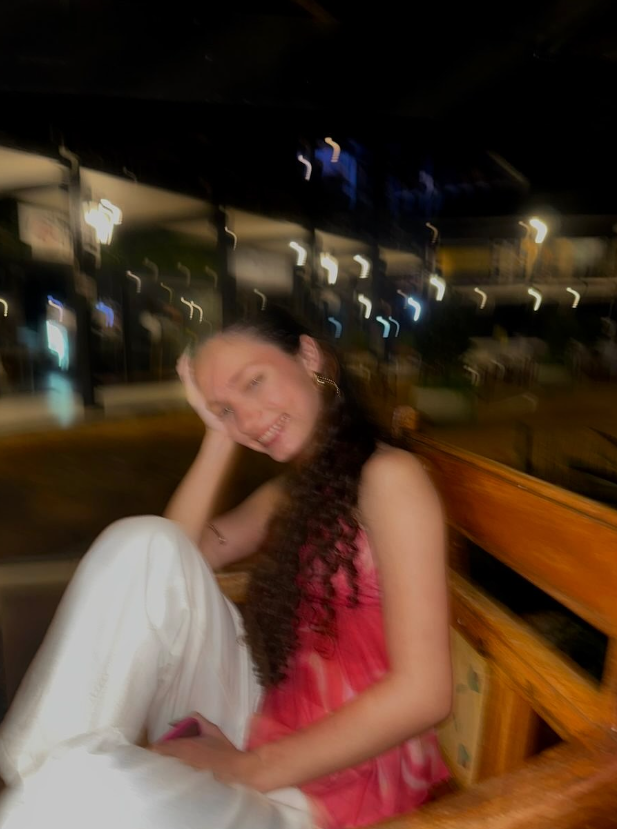
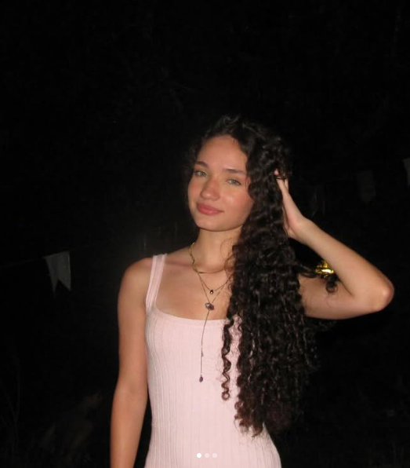
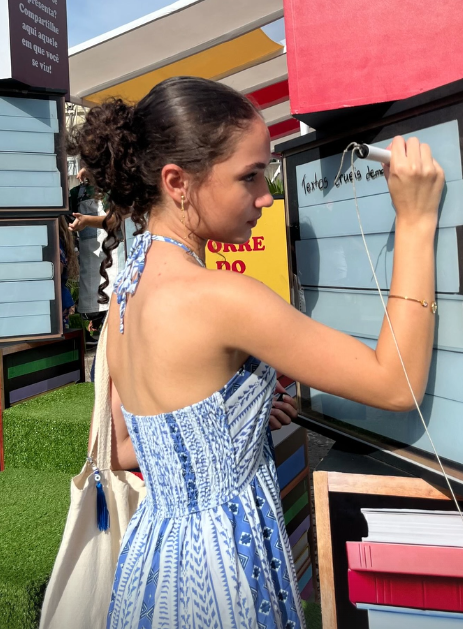
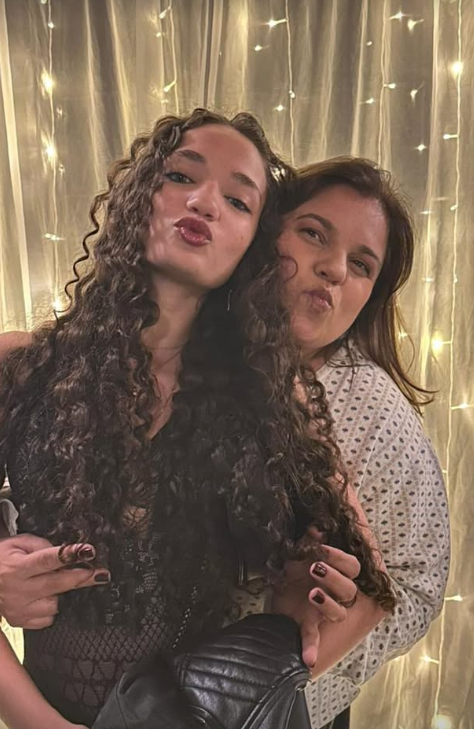
 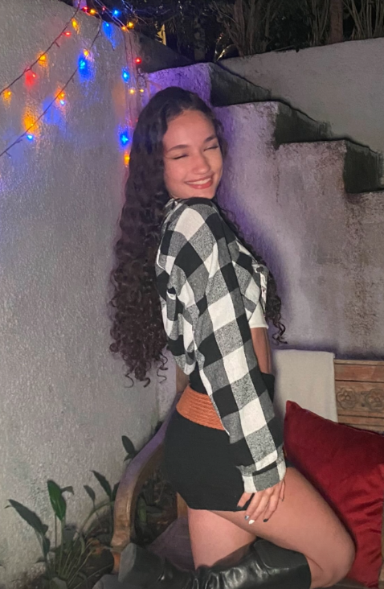
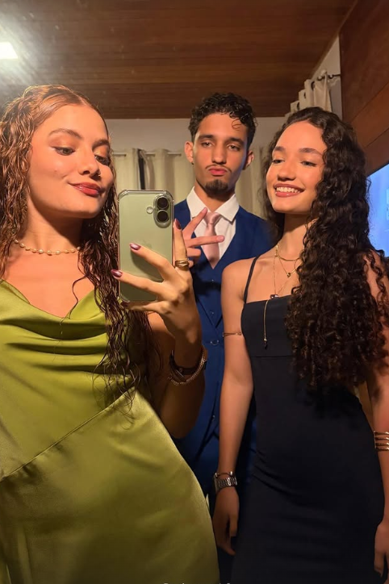
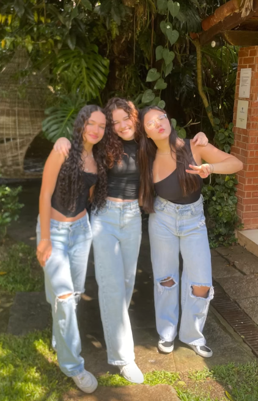
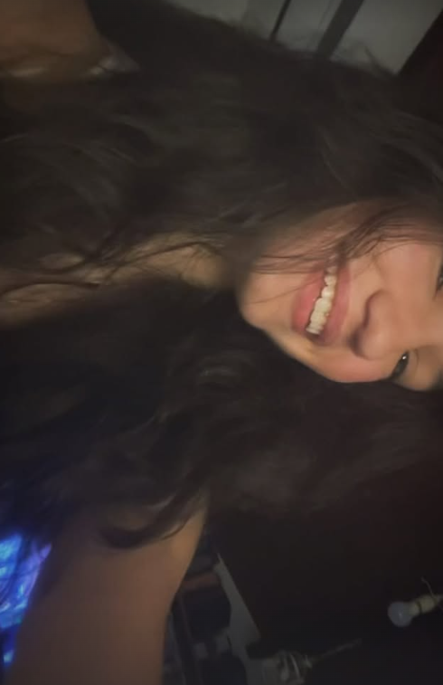
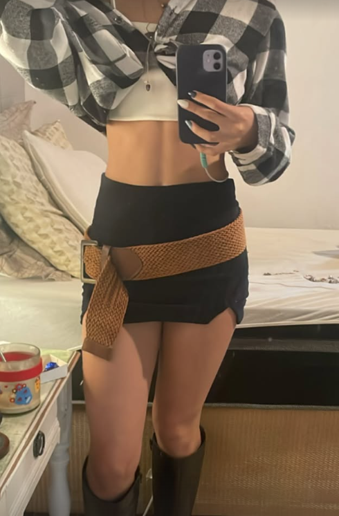
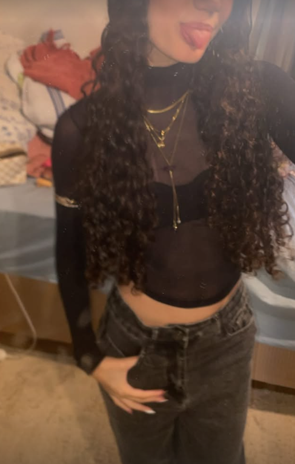
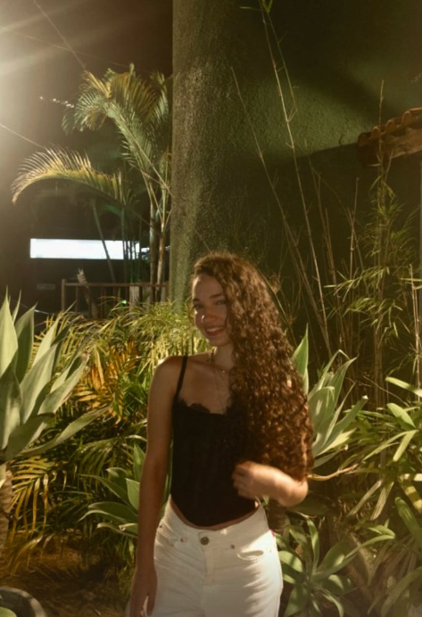
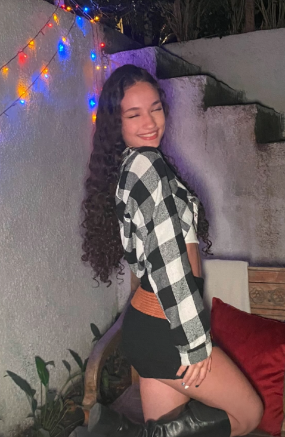
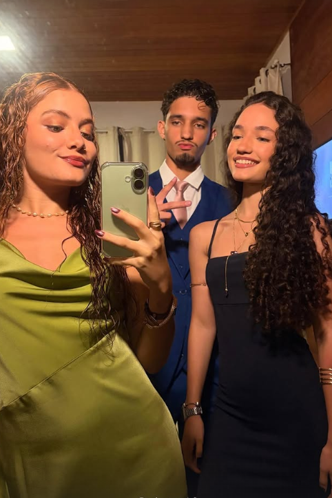
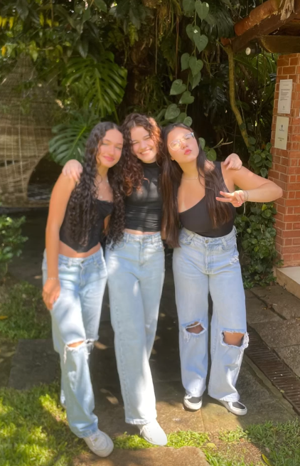
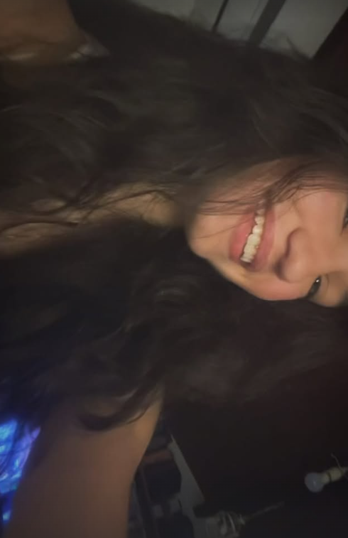
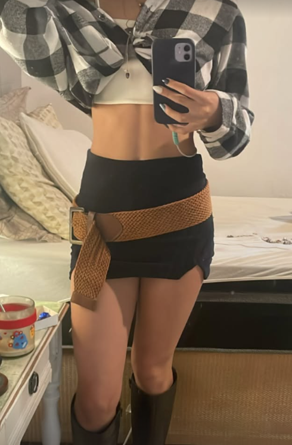
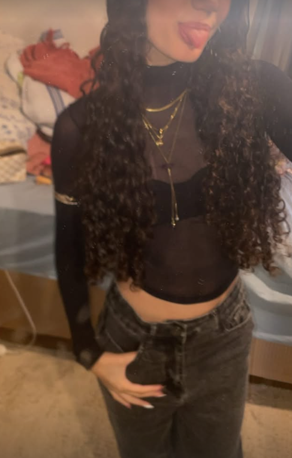
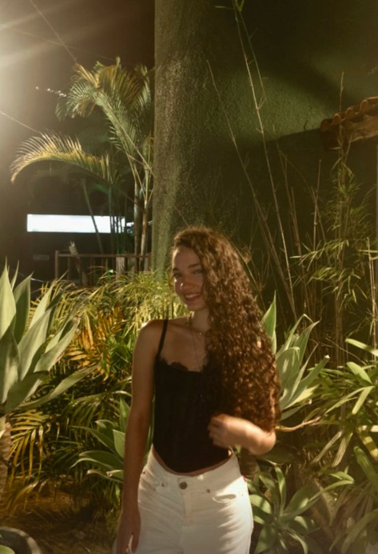


 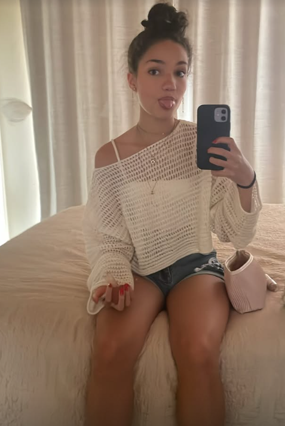
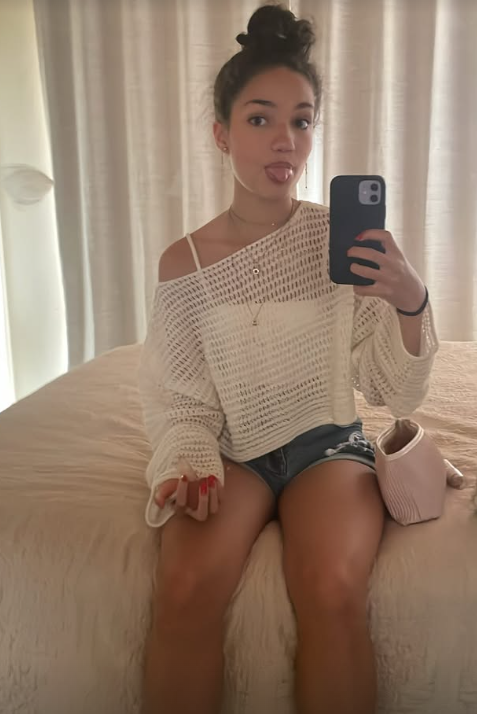
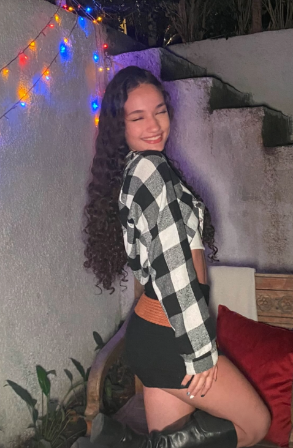
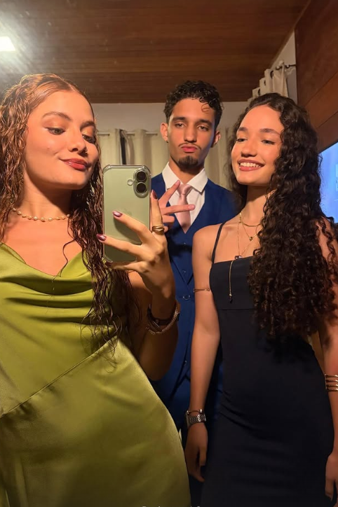
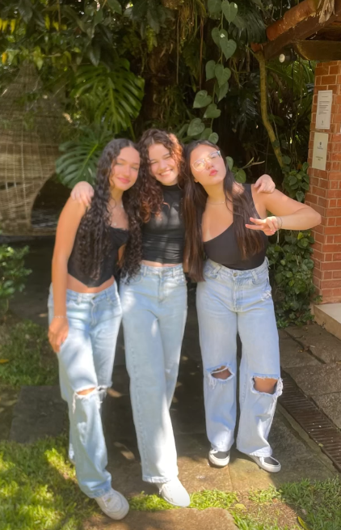
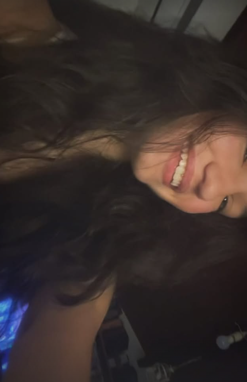
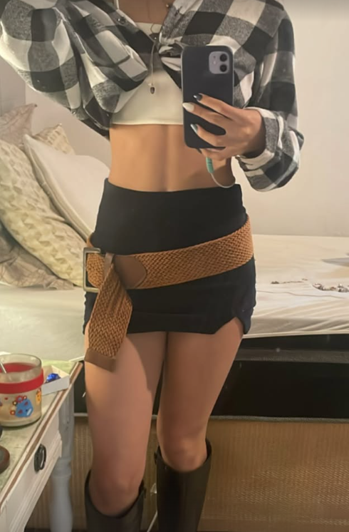
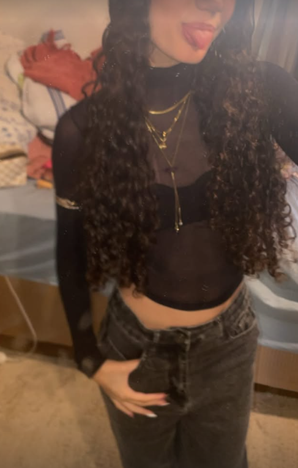
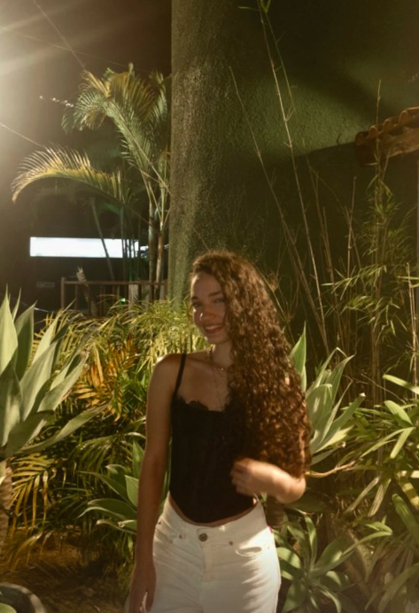
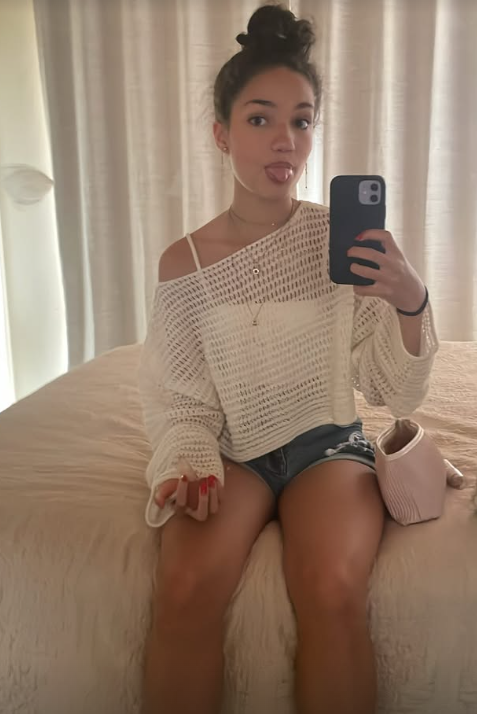